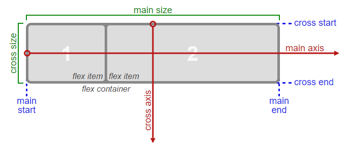
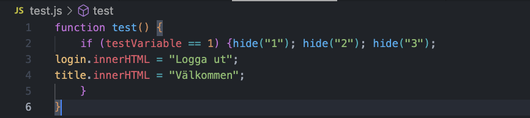
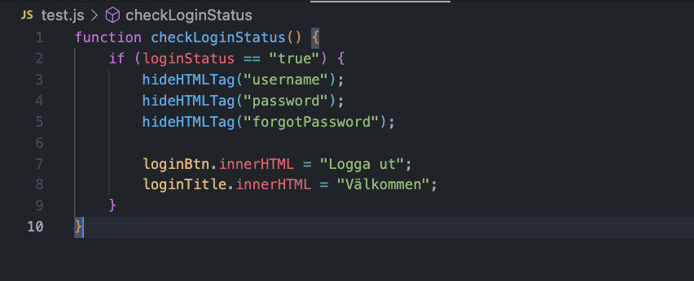

GitHub Flow
Vad är GitHub Flow?
GitHub Flow är en viktig del i hur man arbetar med Git och GitHub. GitHub är ett kodhanteringssystem där man skapar struktur för sitt projekt. Det handlar om att effektivisera arbetet om man ska arbeta med ett uppdrag i ett team där varje gruppmedlem ska utför sin uppgift ("branch") för att sedan slå samman dem till ett slutgiltigt dokument ("main"). Detta är något som M. Trofast Gunnarsson (personlig kommunikation, 7 oktober, 2022) lyfter fram i sin videoinspelning "Git och GitHub" på lärplattformen Canvas för oss studenter
Såhär kan flödet se ut:
-
Utse projektledare
- New repo - Projektledaren skapar ett repository ("repo") i GitHub.
- Settings - Collaborators - Add collaborators - Projektledare bjuder in/lägger till övriga gruppmedlemmar i detta repo.
- Issues - Add issues - Projektledaren delar upp repot i olika uppgifter ("issues").
- Assignees - Projektledaren delegerar uppgifter till övriga gruppmedlemmar.
-
Klona repot
- Respektive gruppmedlem måste acceptera inbjudan på mejl och du hänvisas direkt till detta repo i GitHub.
- Ställ dig i rätt mapp på din dator där du vill att repot ska plockas ner (klonas), och öppna sedan "Terminalen" för mappen.
- git clone LÄNK - Kopiera in länken i "Terminalen" som visas under "Clone" i repot på GitHub.
-
Öppna Visual Studio Code
- Öppna "Terminalen" i VS Code
- git checkout -b NAMN - Skapa en ny branch.
- git branch - Kontrollera att du har skapat en ny branch som du jobbar i.
-
Ändringar i koden
- git status - för att se allting som modifierats utifrån det repo du plockade ner från GitHub.
- git add .FIL/MAPP | git add * - Lägg till modifierade filer. OBS! Lägg till alla modifierade filer med hjälp av asterix.
- git commit -m "VALFRITT MEDDELANDE" - Lägg till ett (kortfatta) meddelande med ett eller två ord gällande vad som har ändrats eller lagts till genom denna commit.
-
Pusha upp koden
- git push -u origin NAMN | git push - När du är klar för att pusha upp till GitHub. OBS! Om du redan har pushat upp just den branch som du arbetar i skriv endast git push.
-
Gör pull-request
- Pull-request - Gör en pull-request på GitHub.
- Reviews - Lägg till en kommentar och ge projektledaren åtkomst till din branch.
-
Slå samman en branch till main
- Added files - File Changes - Gå in i pull-request för att kontrollera att det inte ska bli en "merge conflict".
- Review - Ändra till goodkänd och lämna en kommentar t.ex. "Ser bra ut".
- Merge - När alla brancher är godkända ska respektive gruppmedlem slå samman sin branch med main.
-
Städa upp
- git branch checkout main - Se till att ändra branch och stå i main.
- Delete branch - Respektive gruppmedlem ska radera sin branch på GitHub.
- git branch -d NAMN -Respektive gruppmedlem kan även radera sin branch på sin dator.
- Close issue - Stäng varje slutförd "branch" som har blivit sammanslagen med "main" på GitHub. Kom ihåg att även här lämna en kommentar t.ex. "Den är klar".
Flexbox
Vad är Flexbox?
Med flexbox kan man enkelt göra en hemsida responsiv, d.v.s. att sidans layout fungerar lika bra på dator, som surfplattor och mobiler. Som utvecklare måste du ha koll på flödesriktningarna för hur man använder flexbox. Se bilden nedan
Sedan ska utvecklaren sätta olika egenskaper och tilldelar dessa olika värden property: value
Egenskaperna skiljer sig åt beroende på om det är överordnade element (s.k. "flex container") eller underordnade element (s.k. "flex items"). Värden sätts utifrån vilken layout man vill uppnå. Hos CSS-tricks (u.å.) finns detta samlat och förklarar mer ingående om hur flexbox fungerar.
Egenskaper för "flex container"
Kallas också för "Parent container"
- display
- flex-direction
- flex-wrap
- flex-flow
- justify-content
- align-items
- align-content
- gap, row-gap, column-gap
Egenskaper för "flex items"
Kallas också för "Children container"
- order
- flex-grow
- flex-shrink
- flex-basis
- flex
- align-self
DOM - Document Object Model
Vad är DOM?
DOM ("Document Object Model") är objekt som refererar till hela webbsidan. Med andra ord, en modell av ett HTML-dokument som är strukturerat likt en trädstruktur där varje nod är ett objekt som representerar en del av dokumentet. När man säger att man ska "manipulera DOM" innebär det att man modifierar webbsidan och hämtar händelser utifrån användarens beteende t.ex. klickar på en knapp eller skriver ett meddelande i ett inputfält.
Hur fungerar DOM?
Enligt MDN Web Docs (2022) är DOM alltså inget programmeringsspråk, utan är istället ett webb-API och behövs för att kunna skapa och förändra webbsidor. Med programmeringsspråket JavaScript kan man som utvecklare använda DOM som verktyg.
"Clean code"
Vad är s.k. clean code?
Med "clean code" (eller på svenska "fin kod") innebär det att man som utvecklare strukturerar koden på ett logiskt sätt. Man ska undvika att skriva så mycket kod som möjligt för att göra koden mer läs- och testbar samt tydlig och lätt att förstå. Det innebär också att man ska namnge variabler, klasser och id med konkreta namn (Developers!, 2022). Något som M. Trofast Gunnarsson (personlig kommunikation, 7 oktober, 2022) lyfter fram i sitt inlägg "Viktigt med tydlig och lättläst kod" på lärplattformen Canvas. Hon menar att det är av stor vikt att kommentera sin kod för att komma ihåg hur du tänkte när du skrev koden om du vid ett senare tillfälle ska läsa den, eller om någon annan ska läsa din kod.
Allt detta har stor betydelse, särskilt om du arbertar eller ska arbeta med andra programmerare i ett team.
Exempel på "clean code"
Bilden ovan är en screenshot på hur man kan skriva kod på ett jättedåligt sätt (Carlström, 2022).
Bilden ovan är en screenshot på hur man kan skriva samma kod på ett mycket bättre sätt utifrån "fin kod" (Carlström, 2022).
Ramverk
Vad är ett ramverk?
Ramverk är en tilläggstjänst som gör det enklare och mer effektivt att arbeta i ett programmeringsspråk. Som utvecklare kan man välja och vraka mellan redan existerande kommandon och funktioner som ramverket innehar och sätta in i sin egen kod.
På så sätt får man väldigt mycket på köpet så man slipper göra allt från grunden, och blir därmed en mer tidseffektiv programmerare.
Inom Javascript finns det många kända ramverk för frontend, t.ex. React, Angular, Vue och Ember. Även Node.js gör att du kan koda backend mer effektivt i Javascript. Som fullstack kan man använda exempelvis React i frontend och Node.JS i backend.
Det är extremt vanligt att man använder ramverk i webbutveckling idag. I och med att vi oftast arbetar utifrån det agila arbetssättet så hjälper ramverk oss att snabbt komma framåt i vår kodning.
Hur fungerar ramverk?
Vanligtvis startar man med att plocka ihop ramverk som passar med projektet som man jobbar med och utgår från det när man väl ska börja koda. Det krävs både kunskap och erfarenhet att hitta och dra nytta av rätt ramverk för sitt projekt.
Att välja ramverk kan vara svårt - men du behöver välja utifrån:
- Hur populärt ramverket är?
- Uppdateras det ofta?
- Är det ett stort team som arbetar med det?
OBS! Att använda stora tunga ramverk när man inte är i behov av det kan tröga ner din sida eftersom du få med dig alla filerna i ramverket oavsett om du använder dem eller inte. Ramverk är bra men ska endas användas där de gör nytta!
M. Trofast Gunnarsson (personlig kommunikation, 7 oktober, 2022) lyfter fram i sitt inlägg "Ramverk och kodbibliotek" att Bootstrap är ett populärt frontend-ramverk som är skapat för att snabbt kunna skapa mobilvänliga (responsiva) webbsidor. Något som har blivit alltmer viktigt i dagens samhälle, då vi använder mindre skärmar som mobiler.
Referenslista
Bilder
[Fotografi på hur flexbox fungerar, utan titel]. (u.å.). Hämtad 7 oktober 2022, från https://www.w3.org/TR/css-flexbox-1/#box-model
[Fotografi på kod, utan titel]. (u.å.). Hämtad 7 oktober 2022, från https://unsplash.com/photos/4hbJ-eymZ1o
Lärplattform (Canvas)
(M. Trofast Gunnarsson, personlig kommunikation, 7 oktober, 2022)
Mobilapplikationer
Developers!. (2022). Developers! (77. Clean Code) [Poddcast]. Hämtad från https://spotify.com
Webbplatser
CSS-tricks. (u.å.). A Complete Guide to Flexbox. Hämtad 7 oktober 2022, från https://css-tricks.com/snippets/css/a-guide-to-flexbox/#aa-prefixing-flexbox
MDN Web Docs. (u.å.). Introduction to the DOM. Hämtad 7 oktober 2022, från https://developer.mozilla.org/en-US/docs/Web/API/Document_Object_Model/Introduction